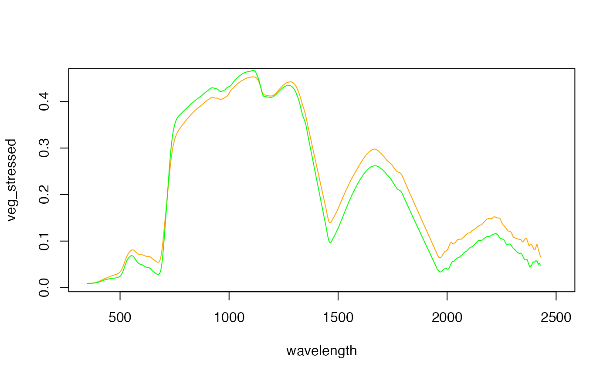

Writes binary ENVI spectral library files (sli) with accompanying header (.sli.hdr) files OR ASCII spectral library files in ENVI format.
Usage
writeSLI(
x,
path,
wavl.units = "Micrometers",
scaleF = 1,
mode = "bin",
endian = .Platform$endian
)Arguments
- x
data.frame with first column containing wavelengths and all other columns containing spectra.
- path
path to spectral library file to be created.
- wavl.units
wavelength units. Defaults to Micrometers. Nanometers is another typical option.
- scaleF
optional reflectance scaling factor. Defaults to 1.
- mode
character string specifying output file type. Must be one of
"bin"for binary .sli files or"ASCII"for ASCII ENVI plot files.- endian
character. Optional. By default the endian is determined based on the platform, but can be forced manually by setting it to either "little" or "big".
Value
Does not return anything, write the SLI file directly to your drive for where your specified your path parameter
Examples
## Example data
sliFile <- system.file("external/vegSpec.sli", package="RStoolbox")
sliTmpFile <- paste0(tempdir(),"/vegetationSpectra.sli")
## Read spectral library
sli <- readSLI(sliFile)
head(sli)
#> wavelength veg_stressed veg_vital
#> 1 350 0.008958003 0.008836994
#> 2 351 0.008910760 0.008909440
#> 3 352 0.008874181 0.008972186
#> 4 353 0.008847097 0.009025744
#> 5 354 0.008829174 0.009071405
#> 6 355 0.008819440 0.009109739
plot(sli[,1:2], col = "orange", type = "l")
lines(sli[,c(1,3)], col = "green")

## Write to binary spectral library
writeSLI(sli, path = sliTmpFile)